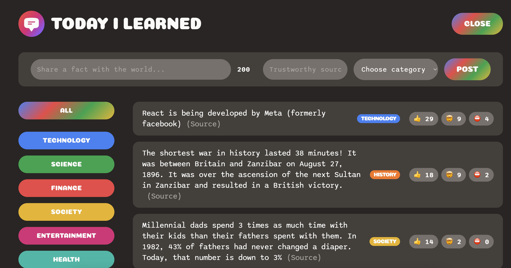
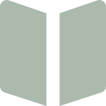

About me

I want to use my skills in front-end development, process improvement & human behavior to help others. This comes in the form of helping companies live out their mission and helping individuals utilize technology as a tool to improve the things they care about.
Some of my specific passions are education, early childhood education & child development, healthcare, & sustainability.
Skills
 HTML5
HTML5 CSS3
CSS3 Sass
Sass Javascript
Javascript React
React-
 Accessibility
Accessibility
 Github
Github- Bootstrap
What I've been working on
Here is where I will describe some things about what I've been working on
Bookmark landing page
Javascript SASS HTML & CSS
- Built using a Figma design file from Frontend Mentor I recreated the landing page according to all design specifications
- Added in functionality using Javascript to built drop-down navigation bar, accordians, and carousel slideshow. Focused on responsive web design.

Research Center
Wordpress
- In my previous role at Indeed, I was responsible for developing a website to store and organize ongoing research studies on various occupations. I designed and developed the site, and created templates to easily add in new occupations as they were available.
- I chose a template theme and customized to follow Indeed's design system. Researched & decided on the plugins to use, including TablePress.